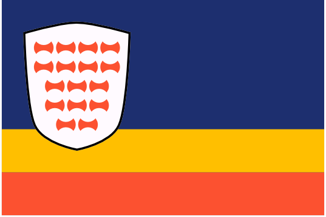

Dracean Intercoastal Republic (DIR)

Despite the name, the Dracean Intercoastal Republic (DIR) is neither dracean, intercoastal or a republic. After the collapse of the Dracean Empire, their territories to the north fractured into smaller kingdoms. Over time however, the shared cultural values from their time as Dracean states drew them together into a loose confederacy. While each individual state is feudal, governed by a monarch with hereditary lords beneath them, these states together elect a "Chancellor" to represent the region as a collective. The current chancellor is Wilhelm van Noord.
Geography
The DIR is made up of 16 full member states, plus the associate member states of Zarovia, Drace, and the various Kaiprite trading colonies lining the east coast. See the regions section for a full breakdown of the various states.
Contents
🡐 PlacesDIR Military Notable Citizens Of The Republic Regions of the DIR